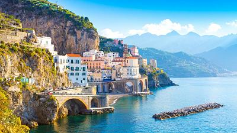

Italia
Cuna del renacimiento europeo, el país de la bota es sinónimo de arte y buen gusto.
Desde su vibrante gastronomía hasta la belleza de sus pueblos y ciudades, Italia tiene de todo y para todo el mundo.
Ruinas romanas se extienden por todo el país con el epicentro en la capital del país, Roma, la ciudad eterna, una de las urbes más bellas del mundo.
El Coliseo es el máximo exponente de la grandeza de un antiguo imperio que antaño dominó buena parte del mundo conocido.
En este país del sur de Europa nacieron también algunos de los más grandes artistas que ha dado la civilización occidental cuyas obras podemos admirar en lugares como Florencia o la propia Ciudad del Vaticano.
Pero si el visitante prefiere salir de sus ciudades e innumerables museos, también encontrará en Italia una variedad natural que incluye de todo: desde los Alpes en el norte con innumerables rutas donde perderse entre valles y montañas hasta las cristalinas playas del sur y sus islas.
De norte a sur, Italia es un país de contrastes que el viajero podrá disfrutar en el momento en que desembarque en sus costas.
¿Por qué visitar italia?
Su geografía y un clima excepcional te invitan a pasar los mejores días en tierras Italianas, podrás disfrutar de un sol que no se apaga nunca: los lagos del norte, los Apeninos, las suaves colinas de la región Toscana, las playas, los volcanes.
Puedes hacer actividaes como:
- Roma es una ciudad hermosa, con la ventaja añadida de ser muy fácil de visitar a pie. Está lleno de monumentos antiguos, hermosas plazas y museos. Aquí están los que hay que ver:
El Coliseo
El foro romano
El Panteón
Fuente de Trevi
Plaza Navona
Si estás de visita en Roma, también debes ir a la Ciudad del Vaticano.
- Florencia, sin duda la ciudad más bella de la Toscana, alberga numerosos museos y palacios renacentistas. El patrimonio cultural es inmenso: la mitad de las obras de arte italianas se encuentran en Florencia.
¡No es de extrañar que sea una de las ciudades más visitadas de Italia junto con Venecia!
- Cuando escuchas hablar de Pisa, lo primero que te viene a la mente es probablemente la famosa torre inclinada, el símbolo de la ciudad.
Sin embargo, también hay otras cosas que ver en la ciudad, por lo que puedes pasar fácilmente un día completo en la ciudad.
- Venecia es una de las ciudades más turísticas de Europa, una gran elección si quieres pasar un fin de semana o más en Italia.
Con sus numerosos canales y sus famosos paseos en góndola, es también el destino perfecto para una estancia romántica. El Carnaval de Venecia se celebra cada año en febrero y atrae a turistas de todo el mundo.
Si no te molesta la multitud, ¡puede ser un buen momento para visitar la ciudad!
- Esta guía de los mejores lugares para visitar en Italia no estaría completa sin mencionar las Cinque Terre, 5 impresionantes pueblos de acantilados con vistas al mar Mediterráneo.
- Lecce, situada en la base de la «bota italiana» en la región de Apulia, es una ciudad barroca de gran belleza.
Hay iglesias, museos y palacios por todas partes, todos compartiendo el mismo estilo arquitectónico.
- Verona es la ciudad del amor y del destino trágico de Romeo y Julieta.
- Génova es y ha sido históricamente siempre una ciudad portuaria. ¡Aquí nació Cristóbal Colón, uno de los aventureros más famosos de todos los tiempos!
- Nápoles es la ciudad europea con el mayor centro histórico, así que puedes estar seguro de que hay muchas iglesias y monumentos que visitar en la ciudad. Nápoles es también muy famosa en todo el mundo por su gastronomía: la pizza, así como la famosa salsa napolitana.
- Milán es la capital de la moda y el diseño, con muchas boutiques de lujo y showrooms de diseñadores de renombre.
Además, ¡también hay muchos edificios históricos para visitar en la ciudad!
- El Lago Maggiore, junto con el Lago de Como y el Lago de Garda es uno de los 3 lagos italianos más grandes
- Situado a tan sólo 1 hora de Milán, el Lago de Como es el tercer lago más grande de Italia.
- El Lago de Garda es el más grande y uno de los lagos más turísticos de Italia.
- Si te gusta el senderismo y la Italia, ¡los Dolomitas están hechos para ti!
- Cerdeña, la segunda isla más grande de Italia, es famosa en todo el mundo por sus impresionantes playas.

Es una ciudad que me gustaria mucho conocer, sus calles, sus canales entre las casas, su arte y gastronimia,
sus casas tan distintas a las que conocemos, su cultura, todo se me hace un lugar perfecto que me encantaria conocer.